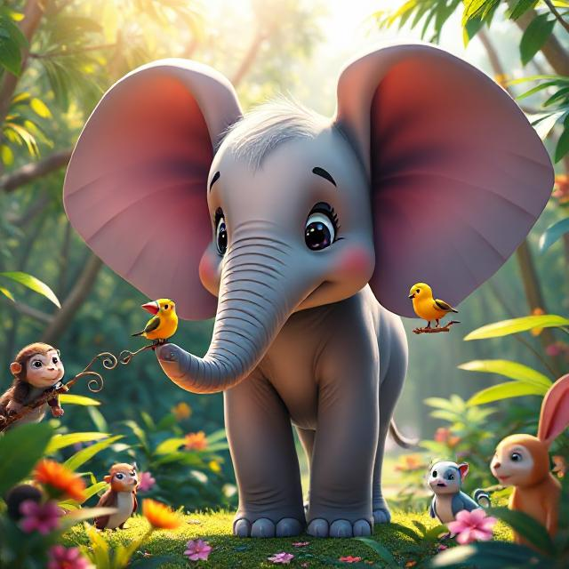

A Savanna Story About Being Proud of Who You Are
On the wide, golden savanna, where the grass waved like the sea and the sun painted the sky with fire, lived a young elephant named Ella.
Ella was kind, gentle, and curious — and she had very, very big ears.
They were so big they sometimes flopped over her eyes.
So big they made a whoosh! sound when the wind blew.
So big that when she walked, they bounced like soft blankets beside her cheeks.
The other animals noticed.
“Hey, flying ears!” joked Monkey, swinging from a tree.
“Do they catch radio signals?” giggled Hyena.
“Why are they so big?” whispered Zebra, trying not to laugh.
Ella lowered her head.
Sometimes, the teasing stung.
But deep down, Ella didn’t really mind.
Because there was something Ella loved to do.
She loved to listen.
With her big ears, she could hear things no one else could:
— the flutter of butterfly wings
— the rhythm of raindrops before the clouds arrived
— the tiny footsteps of ants as they marched through the grass
While others were talking, Ella was always listening — to the wind, the trees, the animals, the world.
And one quiet afternoon, while the sun hung low and warm in the sky, she heard something new.
A soft, trembling cry.
“Help… help…”
Ella froze. Her big ears twitched.
No one else heard it. The other animals were playing and chatting, busy with their games.
But Ella listened harder.
“Help… please…”
It was far away — past the acacia trees, near the rocky cliffs.
Ella turned and started walking toward the sound. She climbed hills, stepped over roots, and paused often, turning her ears like satellite dishes, following the voice.
At last, tucked beneath a bush, shivering and scared, was a tiny baby bird.
Its wing was scratched, and its feathers were ruffled.
“Mama?” it peeped.
“Oh, little one,” Ella said gently. “You’re not alone anymore.”
She picked the baby bird up carefully with her trunk and followed the chirps and flutters in the distance — the sounds of a worried bird family searching, calling.
Soon, the mother bird spotted them and swooped down with a loud, joyful chirp!
The baby bird chirped back, and they nuzzled beaks.
Ella smiled. Her big ears twitched with happiness.
Back at the clearing, the other animals watched as Ella returned — calm, strong, and still listening.
Monkey blinked.
Hyena sat down.
Zebra looked at her feet.
“You… you heard that little bird crying?” Monkey asked.
“From that far away?” gasped Hyena.
Ella nodded. “Yes. My ears helped me hear.”
The animals looked at her differently now — not with jokes or whispers, but with wonder.
From that day on, whenever someone needed help, a warning, or even a quiet friend to listen, they turned to Ella.
And Ella stood tall, proud of the ears that made her special.